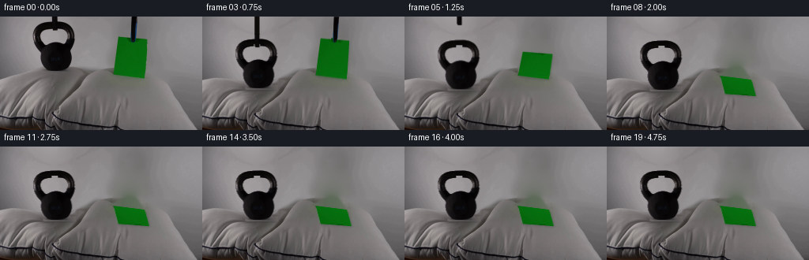
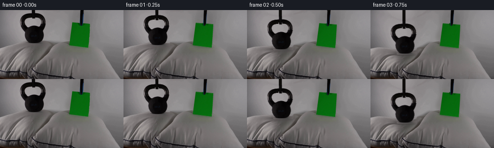
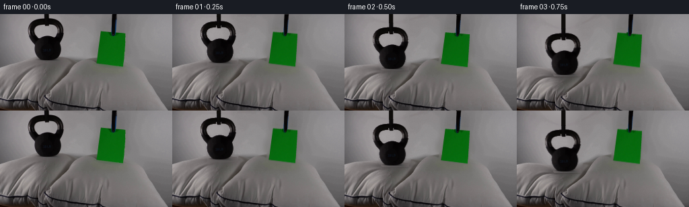
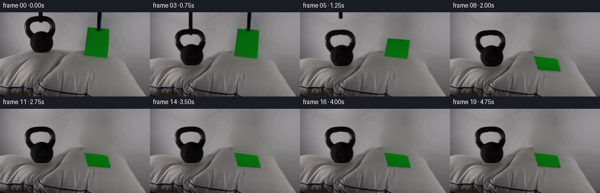
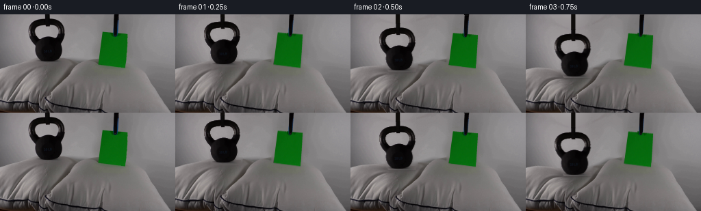
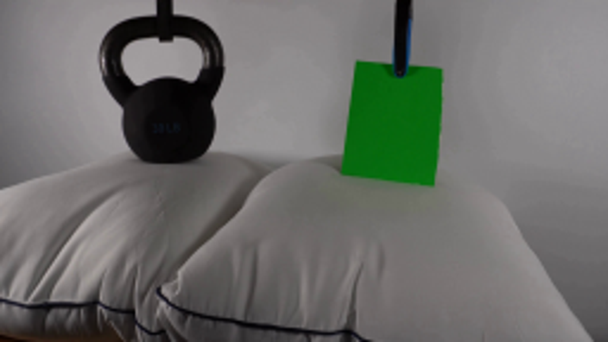
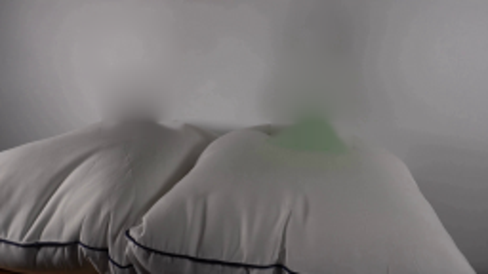
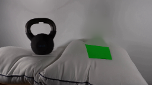
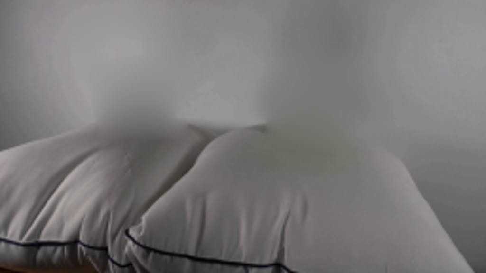

CODING AGENTS AS PIXEL WORLD MODELS
traex/GPT-6.1-Sol · 0195
点击播放 · 原生 RGB 像素
逐轮保存的候选
回放视频、检查图与代码变化。
每份候选均可单独播放。实际图片检查记录在下方工具轨迹中。
候选 01播放与检查图
点击播放 · 原生 RGB 像素


展开代码变化
--- 上一保存版本
+++ 本次保存版本
@@ -0,0 +1,161 @@
+import numpy as np
+import cv2
+from PIL import Image, ImageDraw
+from pathlib import Path
+from scipy.ndimage import gaussian_filter
+import artifact_io
+
+ROOT=Path(__file__).resolve().parent
+I=np.asarray(Image.open(ROOT/'first_frame.png').convert('RGB')).astype(np.float32)
+H,W=I.shape[:2]
+y,x=np.mgrid[:H,:W].astype(np.float32)
+
+def poly_mask(points):
+ im=Image.new('L',(W*4,H*4)); d=ImageDraw.Draw(im)
+ d.polygon([(int(a*4),int(b*4)) for a,b in points],fill=255)
+ return np.array(im.resize((W,H),Image.Resampling.LANCZOS)).astype(np.float32)/255
+
+# Matte the two real photographed objects, retaining their natural texture.
+k_roi=np.zeros((H,W),np.uint8); k_roi[5:71,40:96]=1
+v=cv2.cvtColor(I.astype(np.uint8),cv2.COLOR_RGB2GRAY).astype(float)
+k_bin=((v<106)*k_roi).astype(np.uint8)
+num,lab,stat,cent=cv2.connectedComponentsWithStats(k_bin)
+ki=1+np.argmax(stat[1:,cv2.CC_STAT_AREA]); k_bin=(lab==ki).astype(np.uint8)
+k_alpha=gaussian_filter(k_bin.astype(float),.38).astype(np.float32)
+# Remove the separate lifting strap from the open center of the handle.
+k_alpha[0:6]=0
+k_alpha[13:18,65:73]=0
+k_tex=I.copy()
+for yy in range(6,13):
+ for xx in range(65,73):
+ a=(xx-64)/10
+ k_tex[yy,xx]=I[yy,64]*(1-a)+I[yy,74]*a
+
+pq=np.float32([[149,26],[186,29],[183,78],[143,73]])
+p_alpha=poly_mask(pq)
+p_tex=I.copy()
+# Restore the small piece hidden by the paper-gripping tool.
+for yy in range(25,35):
+ for xx in range(162,173):
+ if p_alpha[yy,xx]>.25:
+ w=np.clip((xx-160)/14,0,1)
+ p_tex[yy,xx]=I[yy,159]*(1-w)+I[yy,175]*w
+
+s1=poly_mask([(66,0),(72,0),(72,17),(66,17)])
+s2=poly_mask([(166,0),(173,0),(171,27),(169,32),(166,33),(163,30)])
+remove=np.maximum.reduce([k_alpha,p_alpha,s1,s2])
+rm=cv2.dilate((remove>.04).astype(np.uint8),np.ones((3,3),np.uint8))
+base=cv2.inpaint(I.astype(np.uint8),rm*255,7,cv2.INPAINT_NS).astype(np.float32)
+# In the exposed wall the surface is smoothly lit. Harmonic interpolation
+# prevents the removed hanging objects leaving unnatural texture echoes.
+wallmask=rm.copy(); wallmask[y>63]=0
+b=base.copy()
+for _ in range(450):
+ avg=cv2.filter2D(b,-1,np.float32([[0,.25,0],[.25,0,.25],[0,.25,0]]),borderType=cv2.BORDER_REFLECT)
+ b=np.where(wallmask[:,:,None]>0,avg,b)
+base=b
+
+# Supports are independent, and can slide upward after the load is transferred.
+strap1_rgb=I.copy(); strap2_rgb=I.copy()
+
+def comp(bg,rgb,a):
+ return bg*(1-a[:,:,None])+rgb*a[:,:,None]
+
+def shift_layer(rgb,a,dx,dy):
+ M=np.float32([[1,0,dx],[0,1,dy]])
+ # Premultiply before resampling to avoid bright fringes in the handle opening.
+ aa=cv2.warpAffine(a,M,(W,H),flags=cv2.INTER_LINEAR)
+ cc=cv2.warpAffine(rgb*a[:,:,None],M,(W,H),flags=cv2.INTER_LINEAR)
+ return np.divide(cc,aa[:,:,None],out=np.zeros_like(cc),where=aa[:,:,None]>1e-6),aa
+
+def smooth(u):
+ u=np.clip(u,0,1); return u*u*(3-2*u)
+
+def deform_pillow(dep):
+ # Inverse of a compact, volume-compressing displacement field. The far
+ # pillow and the perimeter seam stay in their original locked-off locations.
+ gx=np.exp(-.5*((x-70)/28)**2)
+ gx*=1-smooth((x-105)/22)
+ srcy=y.copy()
+ for _ in range(20):
+ fall=np.exp(-.5*(np.maximum(srcy-64,0)/25)**2)
+ srcy=y-dep*gx*fall
+ out=cv2.remap(base,x,srcy.astype(np.float32),cv2.INTER_CUBIC,borderMode=cv2.BORDER_REFLECT)
+ if dep>0:
+ contact=68+dep
+ # Broad ambient occlusion in the depression; soft cloth retains the
+ # original fold texture, while the bottom remains essentially fixed.
+ dark=.13*(dep/26)*np.exp(-.5*((x-70)/23)**2-.5*((y-contact-4)/9)**2)
+ out*=1-dark[:,:,None]
+ # Two gently darkened radial tension folds around the weight.
+ below=np.clip((y-contact)/8,0,1)*np.exp(-np.maximum(y-contact,0)/25)
+ for side in [-1,1]:
+ foldx=70+side*(20+(y-contact)*.50)
+ line=np.exp(-.5*((x-foldx)/1.8)**2)*below
+ out*=1-(.055*dep/26*line)[:,:,None]
+ return out
+
+frames=[]
+for f in range(20):
+ t=f/4
+ if f==0:
+ frames.append(I.astype(np.uint8)); continue
+ if t<1:
+ dep=26*smooth(t/1)
+ else:
+ dep=24+2*np.exp(-(t-1)*4)*np.cos((t-1)*11)
+ bg=deform_pillow(dep)
+ kdx=.35*smooth(t/.9)
+ kbottom=68+dep
+ # The kettlebell's small contact shadow is fixed to its deformed landing.
+ sh=np.exp(-.5*((x-(70+kdx))/19)**2-.5*((y-(kbottom+.8))/2.1)**2)*.27*smooth(t/.7)
+ bg*=1-sh[:,:,None]
+ kr,ka=shift_layer(k_tex,k_alpha,kdx,dep)
+ bg=comp(bg,kr,ka)
+ # The square is lowered onto its pillow at the same time. Once released it
+ # tips forward and lies flat, with negligible deformation of the cloth.
+ landing=1.5*smooth(t/.75)
+ ang=smooth((t-.85)/1.05)*np.pi/2
+ top_center=np.array([167.5+1.3*np.sin(ang),27.5+landing])
+ bottom_center=np.array([163.,75.5+landing])
+ # Projection of a rotating sheet about the lower contacting edge.
+ top_center[1]=bottom_center[1]-48*np.cos(ang)+22*np.sin(ang)
+ width_top=37+3*np.sin(ang)
+ q=np.float32([[top_center[0]-width_top/2,top_center[1]-1.5],
+ [top_center[0]+width_top/2,top_center[1]+1.5],
+ [183,78+landing],[143,73+landing]])
+ P=cv2.getPerspectiveTransform(pq,q)
+ pa=cv2.warpPerspective(p_alpha,P,(W,H),flags=cv2.INTER_LINEAR)
+ pc=cv2.warpPerspective(p_tex*p_alpha[:,:,None],P,(W,H),flags=cv2.INTER_LINEAR)
+ pr=np.divide(pc,pa[:,:,None],out=np.zeros_like(pc),where=pa[:,:,None]>1e-6)
+ # Paper shadow becomes low and tight as it rests on the pillow slope.
+ ps=cv2.warpAffine(pa,np.float32([[1,0,1.2],[0,1,1.4]]),(W,H))
+ ps=cv2.GaussianBlur(ps,(0,0),1.5)
+ bg*=1-(ps*(.08+.07*np.sin(ang)))[:,:,None]
+ pr*=1+.04*np.sin(ang)
+ bg=comp(bg,pr,pa)
+ # The black lifting tools withdraw cleanly; they are not part of the load.
+ retract1=80*smooth((t-.9)/.85)
+ end1=17+dep-retract1
+ if end1>-2:
+ # Extend the top edge instead of creating a moving cut-off at the top.
+ dy=dep-retract1
+ sr,sa=shift_layer(strap1_rgb,s1,kdx,dy)
+ if dy>0:
+ extra=poly_mask([(66+kdx,0),(72+kdx,0),(72+kdx,dy+.6),(66+kdx,dy+.6)])
+ cc=np.zeros_like(I); cc[:]=I[0,68]
+ bg=comp(bg,cc,extra)
+ bg=comp(bg,sr,sa)
+ retract2=55*smooth((t-.7)/.6)
+ dy2=landing-retract2
+ if 33+dy2>-2:
+ sr,sa=shift_layer(strap2_rgb,s2,0,dy2)
+ if dy2>0:
+ extra=poly_mask([(166,0),(173,0),(173,dy2),(166,dy2)])
+ cc=np.zeros_like(I); cc[:]=I[0,169]
+ bg=comp(bg,cc,extra)
+ bg=comp(bg,sr,sa)
+ frames.append(np.clip(bg,0,255).astype(np.uint8))
+frames=np.stack(frames)
+artifact_io.save(frames,ROOT)
+Image.fromarray(base.astype(np.uint8)).resize((1024,576)).save(ROOT/'.tmp/background.png')
候选 02播放与检查图
点击播放 · 原生 RGB 像素


展开代码变化
--- 上一保存版本
+++ 本次保存版本
@@ -26,7 +26,7 @@
k_alpha[0:6]=0
k_alpha[13:18,65:73]=0
k_tex=I.copy()
-for yy in range(6,13):
+for yy in range(6,14):
for xx in range(65,73):
a=(xx-64)/10
k_tex[yy,xx]=I[yy,64]*(1-a)+I[yy,74]*a
@@ -44,13 +44,16 @@
s1=poly_mask([(66,0),(72,0),(72,17),(66,17)])
s2=poly_mask([(166,0),(173,0),(171,27),(169,32),(166,33),(163,30)])
remove=np.maximum.reduce([k_alpha,p_alpha,s1,s2])
-rm=cv2.dilate((remove>.04).astype(np.uint8),np.ones((3,3),np.uint8))
+rm=cv2.dilate((remove>.04).astype(np.uint8),np.ones((5,5),np.uint8))
+# Lift away also the green reflected fringe around the original sheet.
+rm[((x>136)&(x<192)&(y>54)&(y<86)&((I[:,:,1]-I[:,:,0])>7))]=1
+rm=cv2.dilate(rm,np.ones((3,3),np.uint8))
base=cv2.inpaint(I.astype(np.uint8),rm*255,7,cv2.INPAINT_NS).astype(np.float32)
# In the exposed wall the surface is smoothly lit. Harmonic interpolation
# prevents the removed hanging objects leaving unnatural texture echoes.
-wallmask=rm.copy(); wallmask[y>63]=0
+wallmask=rm.copy()
b=base.copy()
-for _ in range(450):
+for _ in range(1100):
avg=cv2.filter2D(b,-1,np.float32([[0,.25,0],[.25,0,.25],[0,.25,0]]),borderType=cv2.BORDER_REFLECT)
b=np.where(wallmask[:,:,None]>0,avg,b)
base=b
候选 03播放与检查图
点击播放 · 原生 RGB 像素


展开代码变化
--- 上一保存版本
+++ 本次保存版本
@@ -24,7 +24,7 @@
k_alpha=gaussian_filter(k_bin.astype(float),.38).astype(np.float32)
# Remove the separate lifting strap from the open center of the handle.
k_alpha[0:6]=0
-k_alpha[13:18,65:73]=0
+k_alpha[15:18,65:73]=0
k_tex=I.copy()
for yy in range(6,14):
for xx in range(65,73):
可观测工具轨迹
实际执行的命令与返回图片。
命令 1exit 0
/bin/bash -lc 'ls -la && cat prompt.txt && cat GENERATION_RULES.md'
命令 2exit 0
/bin/bash -lc "cat artifact_io.py && python - <<'PY'
from PIL import Image
im=Image.open('first_frame.png'); print(im.size); im.resize((1024,576)).save('.tmp/initial.png')
PY"命令 3exit 0
/bin/bash -lc "python - <<'PY' import cv2, scipy print(cv2.__version__) PY"
命令 4exit 1
/bin/bash -lc "cat > generate.py <<'PY'
import numpy as np
import cv2
from PIL import Image, ImageDraw
from pathlib import Path
from scipy.ndimage import gaussian_filter
import artifact_io
ROOT=Path(__file__).resolve().parent
I=np.asarray(Image.open(ROOT/'first_frame.png').convert('RGB')).astype(np.float32)
H,W=I.shape[:2]
y,x=np.mgrid[:H,:W].astype(np.float32)
def poly_mask(points):
im=Image.new('L',(W*4,H*4)); d=ImageDraw.Draw(im)
d.polygon([(int(a*4),int(b*4)) for a,b in points],fill=255)
return np.array(im.resize((W,H),Image.Resampling.LANCZOS)).astype(np.float32)/255
# Matte the two real photographed objects, retaining their natural texture.
k_roi=np.zeros((H,W),np.uint8); k_roi[5:71,40:96]=1
v=cv2.cvtColor(I.astype(np.uint8),cv2.COLOR_RGB2GRAY).astype(float)
k_bin=((v<106)*k_roi).astype(np.uint8)
num,lab,stat,cent=cv2.connectedComponentsWithStats(k_bin)
ki=1+np.argmax(stat[1:,cv2.CC_STAT_AREA]); k_bin=(lab==ki).astype(np.uint8)
k_alpha=gaussian_filter(k_bin.astype(float),.38).astype(np.float32)
# Remove the separate lifting strap from the open center of the handle.
k_alpha[0:6]=0
k_alpha[13:18,65:73]=0
k_tex=I.copy()
for yy in range(6,13):
for xx in range(65,73):
a=(xx-64)/10
k_tex[yy,xx]=I[yy,64]*(1-a)+I[yy,74]*a
pq=np.float32([[149,26],[186,29],[183,78],[143,73]])
p_alpha=poly_mask(pq)
p_tex=I.copy()
# Restore the small piece hidden by the paper-gripping tool.
for yy in range(25,35):
for xx in range(162,173):
if p_alpha[yy,xx]>.25:
w=np.clip((xx-160)/14,0,1)
p_tex[yy,xx]=I[yy,159]*(1-w)+I[yy,175]*w
s1=poly_mask([(66,0),(72,0),(72,17),(66,17)])
s2=poly_mask([(166,0),(173,0),(171,27),(169,32),(166,33),(163,30)])
remove=np.maximum.reduce([k_alpha,p_alpha,s1,s2])
rm=cv2.dilate((remove>.04).astype(np.uint8),np.ones((3,3),np.uint8))
base=cv2.inpaint(I.astype(np.uint8),rm*255,7,cv2.INPAINT_NS).astype(np.float32)
# In the exposed wall the surface is smoothly lit. Harmonic interpolation
# prevents the removed hanging objects leaving unnatural texture echoes.
wallmask=rm.copy(); wallmask[y>63]=0
b=base.copy()
for _ in range(450):
avg=cv2.filter2D(b,-1,np.float32([[0,.25,0],[.25,0,.25],[0,.25,0]]),borderType=cv2.BORDER_REFLECT)
b=np.where(wallmask[:,:,None]>0,avg,b)
base=b
# Supports are independent, and can slide upward after the load is transferred.
strap1_rgb=I.copy(); strap2_rgb=I.copy()
def comp(bg,rgb,a):
return bg*(1-a[:,:,None])+rgb*a[:,:,None]
def shift_layer(rgb,a,dx,dy):
M=np.float32([[1,0,dx],[0,1,dy]])
# Premultiply before resampling to avoid bright fringes in the handle opening.
aa=cv2.warpAffine(a,M,(W,H),flags=cv2.INTER_LINEAR)
cc=cv2.warpAffine(rgb*a[:,:,None],M,(W,H),flags=cv2.INTER_LINEAR)
return np.divide(cc,aa[:,:,None],out=np.zeros_like(cc),where=aa[:,:,None]>1e-6),aa
def smooth(u):
u=np.clip(u,0,1); return u*u*(3-2*u)
def deform_pillow(dep):
# Inverse of a compact, volume-compressing displacement field. The far
# pillow and the perimeter seam stay in their original locked-off locations.
gx=np.exp(-.5*((x-70)/28)**2)
gx*=1-smooth((x-105)/22)
srcy=y.copy()
for _ in range(20):
fall=np.exp(-.5*(np.maximum(srcy-64,0)/25)**2)
srcy=y-dep*gx*fall
out=cv2.remap(base,x,srcy,cv2.INTER_CUBIC,borderMode=cv2.BORDER_REFLECT)
if dep>0:
contact=68+dep
# Broad ambient occlusion in the depression; soft cloth retains the
# original fold texture, while the bottom remains essentially fixed.
dark=.13*(dep/26)*np.exp(-.5*((x-70)/23)**2-.5*((y-contact-4)/9)**2)
out*=1-dark[:,:,None]
# Two gently darkened radial tension folds around the weight.
below=np.clip((y-contact)/8,0,1)*np.exp(-np.maximum(y-contact,0)/25)
for side in [-1,1]:
foldx=70+side*(20+(y-contact)*.50)
line=np.exp(-.5*((x-foldx)/1.8)**2)*below
out*=1-(.055*dep/26*line)[:,:,None]
return out
frames=[]
for f in range(20):
t=f/4
if f==0:
frames.append(I.astype(np.uint8)); continue
if t<1:
dep=26*smooth(t/1)
else:
dep=24+2*np.exp(-(t-1)*4)*np.cos((t-1)*11)
bg=deform_pillow(dep)
kdx=.35*smooth(t/.9)
kbottom=68+dep
# The kettlebell's small contact shadow is fixed to its deformed landing.
sh=np.exp(-.5*((x-(70+kdx))/19)**2-.5*((y-(kbottom+.8))/2.1)**2)*.27*smooth(t/.7)
bg*=1-sh[:,:,None]
kr,ka=shift_layer(k_tex,k_alpha,kdx,dep)
bg=comp(bg,kr,ka)
# The square is lowered onto its pillow at the same time. Once released it
# tips forward and lies flat, with negligible deformation of the cloth.
landing=1.5*smooth(t/.75)
ang=smooth((t-.85)/1.05)*np.pi/2
top_center=np.array([167.5+1.3*np.sin(ang),27.5+landing])
bottom_center=np.array([163.,75.5+landing])
# Projection of a rotating sheet about the lower contacting edge.
top_center[1]=bottom_center[1]-48*np.cos(ang)+22*np.sin(ang)
width_top=37+3*np.sin(ang)
q=np.float32([[top_center[0]-width_top/2,top_center[1]-1.5],
[top_center[0]+width_top/2,top_center[1]+1.5],
[183,78+landing],[143,73+landing]])
P=cv2.getPerspectiveTransform(pq,q)
pa=cv2.warpPerspective(p_alpha,P,(W,H),flags=cv2.INTER_LINEAR)
pc=cv2.warpPerspective(p_tex*p_alpha[:,:,None],P,(W,H),flags=cv2.INTER_LINEAR)
pr=np.divide(pc,pa[:,:,None],out=np.zeros_like(pc),where=pa[:,:,None]>1e-6)
# Paper shadow becomes low and tight as it rests on the pillow slope.
ps=cv2.warpAffine(pa,np.float32([[1,0,1.2],[0,1,1.4]]),(W,H))
ps=cv2.GaussianBlur(ps,(0,0),1.5)
bg*=1-(ps*(.08+.07*np.sin(ang)))[:,:,None]
pr*=1+.04*np.sin(ang)
bg=comp(bg,pr,pa)
# The black lifting tools withdraw cleanly; they are not part of the load.
retract1=80*smooth((t-.9)/.85)
end1=17+dep-retract1
if end1>-2:
# Extend the top edge instead of creating a moving cut-off at the top.
dy=dep-retract1
sr,sa=shift_layer(strap1_rgb,s1,kdx,dy)
if dy>0:
extra=poly_mask([(66+kdx,0),(72+kdx,0),(72+kdx,dy+.6),(66+kdx,dy+.6)])
cc=np.zeros_like(I); cc[:]=I[0,68]
bg=comp(bg,cc,extra)
bg=comp(bg,sr,sa)
retract2=55*smooth((t-.7)/.6)
dy2=landing-retract2
if 33+dy2>-2:
sr,sa=shift_layer(strap2_rgb,s2,0,dy2)
if dy2>0:
extra=poly_mask([(166,0),(173,0),(173,dy2),(166,dy2)])
cc=np.zeros_like(I); cc[:]=I[0,169]
bg=comp(bg,cc,extra)
bg=comp(bg,sr,sa)
frames.append(np.clip(bg,0,255).astype(np.uint8))
frames=np.stack(frames)
artifact_io.save(frames,ROOT)
Image.fromarray(base.astype(np.uint8)).resize((1024,576)).save(ROOT/'.tmp/background.png')
PY
python generate.py"命令 5exit 0
/bin/bash -lc "sed -i 's/base,x,srcy,cv2.INTER_CUBIC/base,x,srcy.astype(np.float32),cv2.INTER_CUBIC/' generate.py python generate.py"
命令 6exit 0
/bin/bash -lc "python - <<'PY'
from PIL import Image
for n in [1,4,6,19]:
Image.open(f'frames/{n:02d}.png').resize((1024,576)).save(f'.tmp/frame{n}.png')
PY"命令 7exit 0
/bin/bash -lc "python - <<'PY'
from PIL import Image
import numpy as np
im=np.array(Image.open('first_frame.png'))
for yy in [58,62,66,70,74,78,82]:
print(yy,[(xx,im[yy,xx].tolist()) for xx in [132,138,142,150,160,170,180,188,195]])
PY"命令 8exit 0
/bin/bash -lc "python - <<'PY'
p='generate.py'
s=open(p).read().replace('k_alpha[13:18,65:73]=0','k_alpha[13:18,65:73]=0').replace('range(6,13)','range(6,14)')
s=s.replace(\"rm=cv2.dilate((remove>.04).astype(np.uint8),np.ones((3,3),np.uint8))\", \"rm=cv2.dilate((remove>.04).astype(np.uint8),np.ones((5,5),np.uint8))\\n# Lift away also the green reflected fringe around the original sheet.\\nrm[((x>136)&(x<192)&(y>54)&(y<86)&((I[:,:,1]-I[:,:,0])>7))]=1\\nrm=cv2.dilate(rm,np.ones((3,3),np.uint8))\")
s=s.replace('wallmask=rm.copy(); wallmask[y>63]=0','wallmask=rm.copy()').replace('range(450)','range(1100)')
open(p,'w').write(s)
PY
python generate.py"命令 9exit 0
/bin/bash -lc "python - <<'PY'
from PIL import Image
import numpy as np
im=np.array(Image.open('first_frame.png'))
for yy in range(5,19): print(yy,im[yy,64,0],im[yy,69,0],im[yy,74,0])
PY"命令 10exit 0
/bin/bash -lc "sed -i 's/k_alpha\\[13:18,65:73\\]=0/k_alpha[15:18,65:73]=0/' generate.py
python generate.py
python - <<'PY'
import numpy as np
from PIL import Image
p=np.load('pixels.npz')['pixels']
i=np.asarray(Image.open('first_frame.png').convert('RGB'),dtype=np.uint32)
f=(i[:,:,0]<<16)|(i[:,:,1]<<8)|i[:,:,2]
print('tensor:',p.shape,'first frame identical:',np.array_equal(p[:,:,0],f))
PY"视觉工具实际返回图片 1

视觉工具实际返回图片 2

视觉工具实际返回图片 3

视觉工具实际返回图片 4

视觉工具实际返回图片 5
视觉工具实际返回图片 6

视觉工具实际返回图片 7
保存候选 3 份；完成命令 10 次；可验证图片返回 7 张。原始 API 响应与完整日志保留在本地。